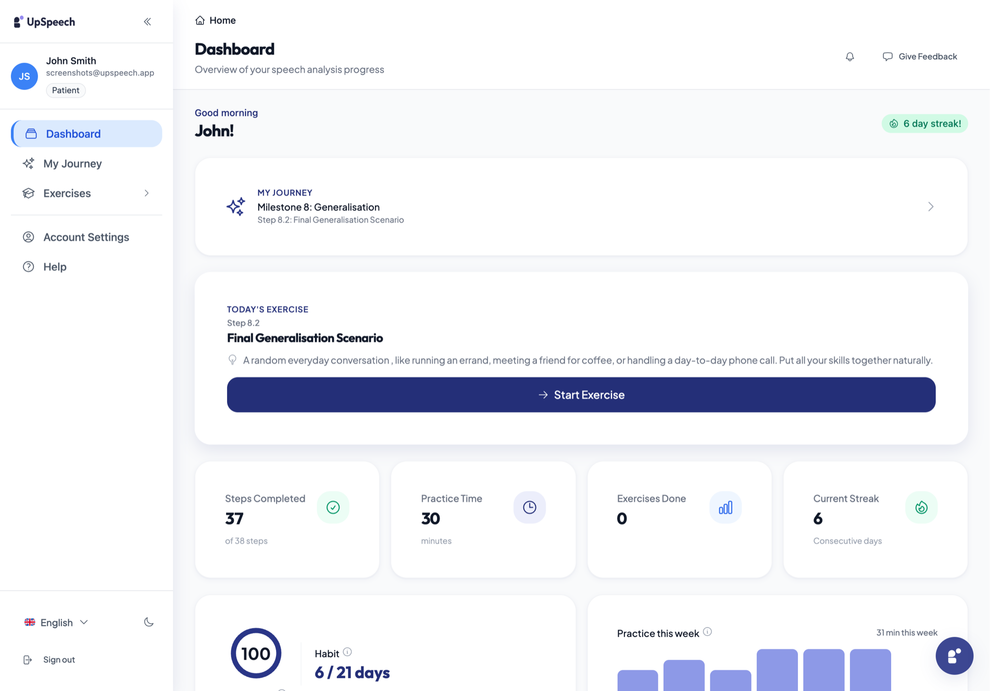
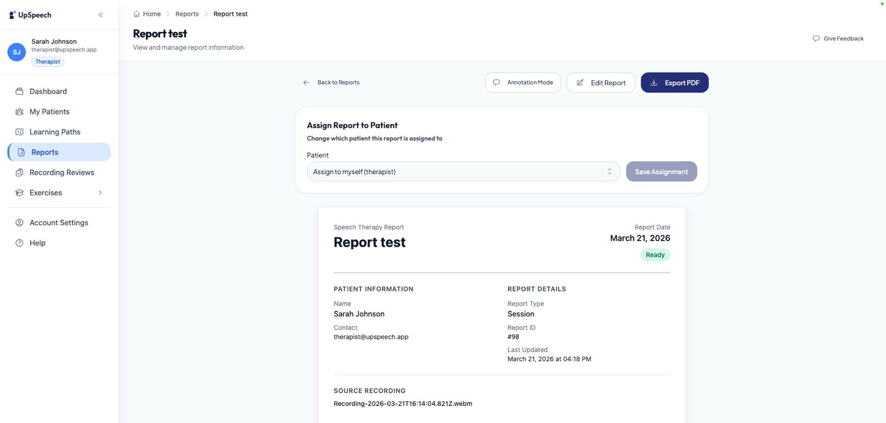
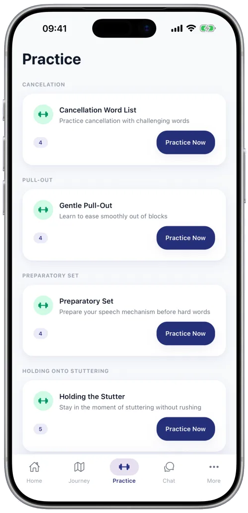

Speech therapy, all week long
Therapy that doesn't stop at the clinic door.
Guided practice, gentle feedback, and progress you can see, between every session.
5day streak
Calm start
UpSpeech Instagram
Exportable first-grid, story, and highlight templates for a calm, encouraging speech-therapy launch system. Calm, scientific, encouraging.
Profile landing grid
Speech therapy, all week long
Guided practice, gentle feedback, and progress you can see, between every session.
For people who stutter
A few minutes a day, shaped around the technique your therapist set.
Progress, not pressure
Streaks, technique scores, and trends, shared with your therapist.
Personality through polish
For speech-language pathologists
Stutter-positive
We build confidence and tools, never a demand to hide how you talk.
A clear path
Scenario practice
Low-stakes reps now, so the real moment feels lighter.
Free for patients
Ask your therapist about UpSpeech, or begin practising today.
upspeech.appPhoto + overlay feed
Daily practice
Between sessions
For clinicians

Progress tracking

For therapists
Carousel
4-slide carousel
Save this for the start of your next practice week.
Swipe →Mon - Fri
A few guided minutes on the technique your therapist chose.
Anytime
See what changed, send a note to your SLP when something clicks.
Next session
Your therapist sees the trends. The session starts with more context.
Start practisingStories
Keep the streak
Quick poll
Vote, then practise that exact scenario in app.
Progress reveal
Stutter facts
Stuttering is neurological, not a sign of anxiety or low confidence.
Tonight's practice
Anywhere works
Highlights
Launch kit

Now on iPhone and Android
Daily exercises, your streak, and your therapist's feedback, wherever you are.
The documentation problem UpSpeech was built to take off your plate.
For speech-language pathologists
~2 hr/dayThat's the documentation load SLPs report. UpSpeech drafts the note so the session stays about the person.
Stories
Take it with you